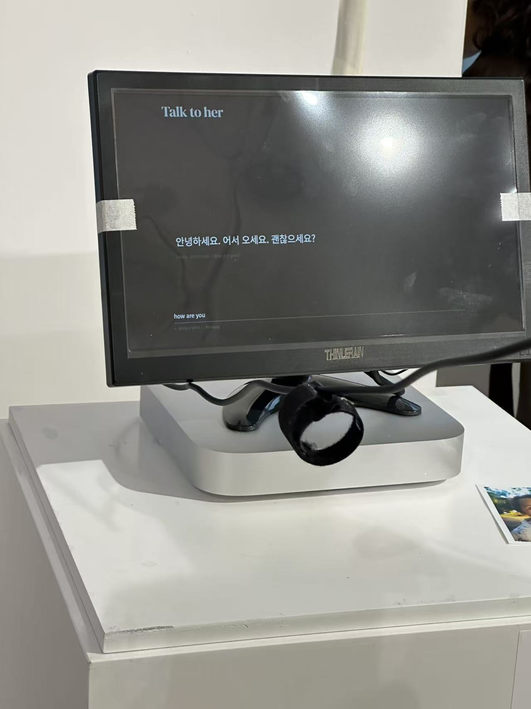
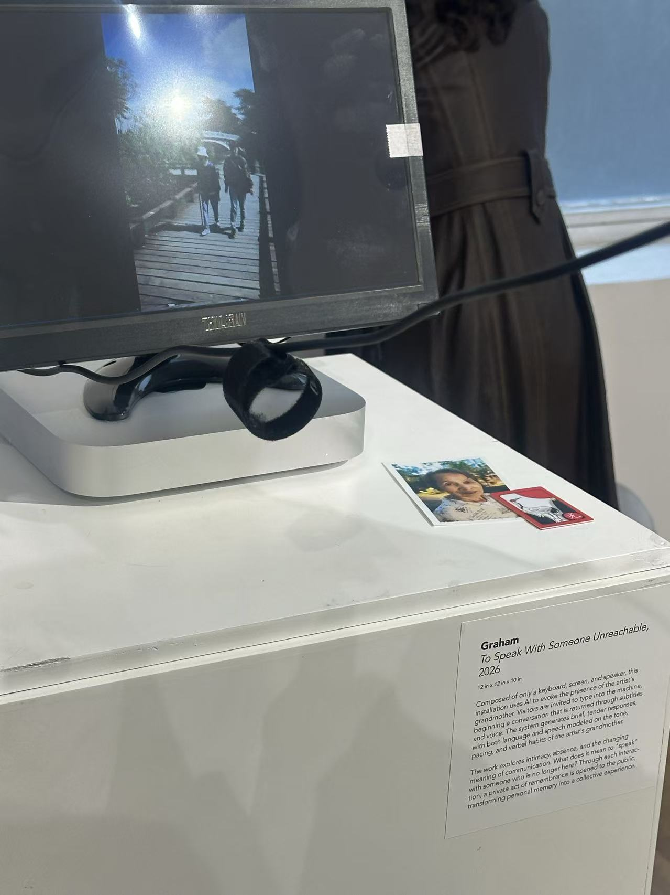
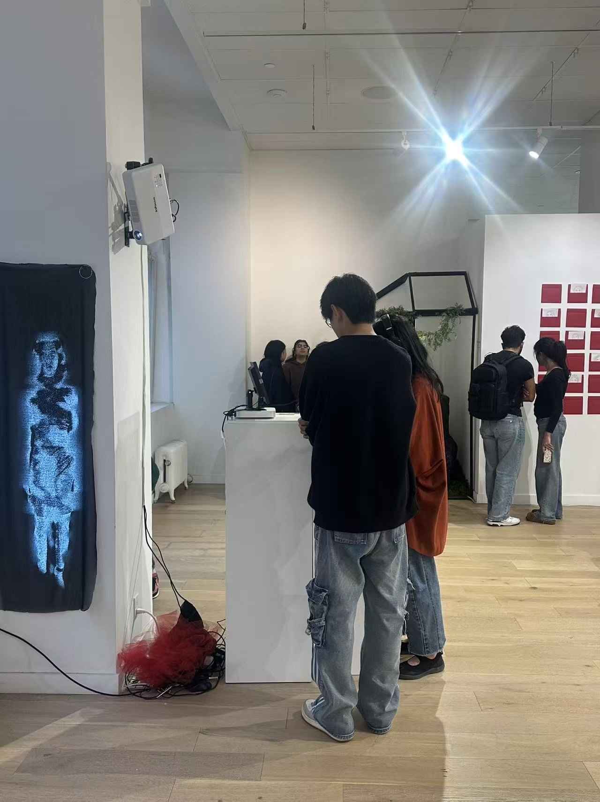

Talk to her
2025–2026 · Interactive AI installation, single-channel audio · Two weeks



Talk to her began with things I still wanted to say to my grandmother after she passed away. Visitors type a message in any language and hear a reply in Korean, with an English translation on screen.
The voice is synthesized from three recordings of her speaking. The character draws on what I remember. I wanted to make room for another conversation, even if I could never be sure who was answering.